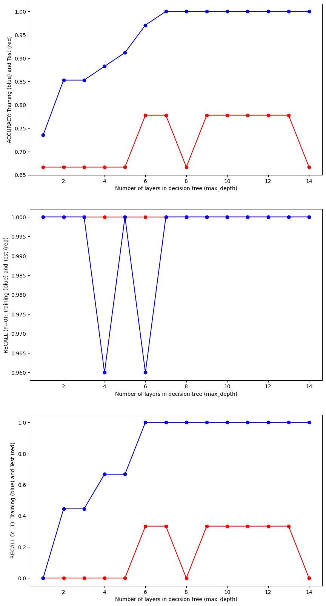
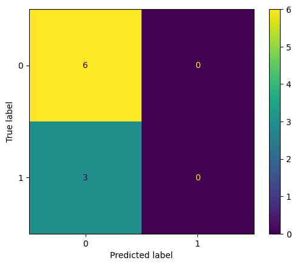

In this analysis, we explore the performance of regression and classification decision tree models to understand the intricate relationships within our dataset. We found that the regression tree outperformed the linear regression model, likely because decision trees do not assume any specific functional form or distribution, whereas linear regression attempts to fit a straight line through the data, which may not be suitable for complex relationships. Decision trees, by learning simple decision rules from features, are better equipped to capture the underlying patterns in the bike path dataset.
Data Preprocessing
1. Normalization or Standardization
We applied z-score normalization to the mileage feature to scale it appropriately with other features.
2. Feature Selection or Extraction
Given the limited size of the dataset, all available features were kept, with no extraction performed.
3. Encoding Categorical Variables
Categorical features were one-hot encoded to convert them into a binary format suitable for modeling.
Training & Testing Strategy
1. Split Methods
We used the train_test_split function from sklearn to divide the dataset into training and testing sets, applying a standard 80/20 split.
2. Dataset Proportions
The dataset was divided such that 80% was used for training, and 20% was reserved for testing.
Overview of Methods
1. Model Rationale
Decision tree models were selected due to their flexibility in capturing complex, non-linear relationships. We chose regression trees for continuous targets and classification trees for categorical targets.
2. Overview of Algorithms
Linear Regression: A parametric model used as a baseline for regression tasks.
Regression Tree: A non-parametric model that uses decision rules to predict continuous outcomes.
Binary Classification Tree: A model for predicting binary outcomes, such as whether a bike path is a loop or not.
Multiclass Classification Tree: A model used to predict more than two classes, applied to the ‘state1’ variable.
Linear Regression
We began with linear regression as a baseline to understand how well a simple linear model could fit the data. Linear regression assumes a linear relationship between the target (‘sentiment’) and the input features. We evaluated the model using two metrics:
RMSE (Root Mean Squared Error): Measures the error between predicted and actual values, with a lower value being desirable.
R²: Represents the proportion of variance explained by the model, where higher values indicate better fits.
For this analysis, we obtained: - RMSE: 0.14 - R²: 0.03
Although the RMSE is low, the R² value indicates a poor fit, suggesting that a linear model is insufficient for capturing the underlying relationships in the data. We decided to proceed with more complex models.
Regression Tree
Next, we applied a regression tree, which is non-parametric and can dynamically fit the data by learning decision rules. We fine-tuned the model by testing various max_depth hyperparameters, which control the depth of the tree. We found that a max_depth of 2 minimized the testing error while avoiding overfitting.
Optimal hyperparameter: max_depth = 2
Training RMSE: 0.11
Testing RMSE: 0.048 (lower than the linear regression model)
The regression tree significantly outperformed linear regression in terms of RMSE, indicating that the model was better suited to capture the underlying patterns in the data.
Binary Classification Tree
After the regression task, we focused on a binary classification problem: predicting whether a bike path is a loop (1) or not (0). Given the poor R² from the linear regression, we chose to avoid logistic regression and instead used a decision tree for classification. We tuned the max_depth hyperparameter and found that a value of 7 yielded the best performance.
Optimal hyperparameter: max_depth = 7
Accuracy: 78%
Confusion Matrix:
Negative recall: 100%
Negative precision: 75%
Positive recall: 33%
Positive precision: 100%
The model performed well in terms of accuracy, but the confusion matrix revealed that it frequently predicted the non-loop class (0), likely due to class imbalance in the dataset. This bias resulted in a low positive recall.
Multiclass Classification Tree
Finally, we aimed to predict the ‘state1’ variable, which represents multiple categories. We evaluated the model by testing various max_depth values to find the optimal setting. We selected max_depth = 2 based on its performance.
Optimal hyperparameter: max_depth = 2
Test Accuracy: 44%
Although the model outperformed random guessing, with an accuracy of 44%, it was not highly predictive. The confusion matrix indicated that the model tended to predict the most prevalent class correctly, but struggled with the other categories.
Discussion
1. Result Interpretation
The regression tree emerged as the best-performing model, with a testing RMSE of 0.048, which indicates a good fit. However, further testing with additional data would be important for validating its robustness.
The binary classification tree performed well overall, with 78% accuracy, but the confusion matrix highlighted issues with class imbalance. The model heavily favored predicting non-loop paths, which reduced its utility in predicting the loop class.
The multiclass classification model achieved an accuracy of 44%, which is marginally better than guessing randomly. It often predicted the most common class, but failed to predict the other categories accurately. More data and improved feature engineering would likely enhance the performance of this model.
2. Model Performance Comparison
Among all models tested, the regression tree offered the best performance with the lowest RMSE. The binary classification tree showed promising accuracy but suffered from class imbalance issues. The multiclass model’s performance was the weakest, highlighting the need for better predictive features or more data.
3. Insights Gained
The regression tree is the most reliable model for this dataset, as it can better capture non-linear relationships. For classification tasks, particularly binary classification, addressing class imbalance and tuning the model further is crucial. The multiclass model, while slightly better than random, would benefit from more data and better feature selection to improve predictive accuracy.
Code
Linear Regression
from sklearn.model_selection import train_test_splitfrom sklearn.linear_model import LinearRegressionfrom sklearn.metrics import mean_squared_error, r2_scorefrom sklearn.tree import DecisionTreeRegressor, DecisionTreeClassifier, plot_treefrom sklearn.model_selection import train_test_splitfrom sklearn.metrics import accuracy_scorefrom sklearn.metrics import precision_scorefrom sklearn.metrics import recall_scorefrom sklearn.metrics import confusion_matrix, ConfusionMatrixDisplayimport numpy as npimport pandas as pdimport seaborn as snsimport matplotlib.pyplot as pltimport random# Make a simple linear regression model to see what testing error arisesrandom.seed(5000)df = pd.read_csv('../../data/processed-data/dc_bike_routes.csv')# Split features and targetY = df['sentiment']X = df.iloc[:, 2:12]# Split data into training and testing setsX_train, X_test, y_train, y_test = train_test_split(X, Y, test_size=0.2, random_state=24)# Initialize Linear Regression modelmodel = LinearRegression()# Train the model on the training datamodel.fit(X_train, y_train)# Make predictions on the test sety_pred = model.predict(X_test)# Evaluate the modeltest_error = mean_squared_error(y_test, y_pred) #Testing Errorr2 = r2_score(y_test, y_pred)# Print performance metricsprint("Mean Squared Error:", test_error)print("R² Score:", r2)
Mean Squared Error: 0.13784056412573972
R² Score: 0.029290998492904396
Regression Tree
## Make a Regression Tree that predicts the sentiment of a bike path given mileage and other binary variablesx_train, x_test, y_train, y_test = train_test_split(X, Y, test_size =0.2, random_state =0)y_train = y_trainy_test = y_testhyper_parameters = []train_error = []test_error = []# Optimize Hyperparameterfor value inrange(1,20): model = DecisionTreeRegressor(max_depth = value) model.fit(x_train, y_train) yp_train = model.predict(x_train) yp_test = model.predict(x_test) train_error_sample = mean_squared_error(y_train, yp_train) test_error_sample = mean_squared_error(y_test, yp_test) hyper_parameters.append(value) train_error.append(train_error_sample) test_error.append(test_error_sample)# Plot the dataplt.plot(hyper_parameters, train_error, label="Training Error", color="blue", linestyle="-", marker="o")plt.plot(hyper_parameters, test_error, label="Testing Error", color="red", linestyle="--", marker="x")# Add labels and titleplt.xlabel("Hyperparameter Range")plt.ylabel("Mean Squared Error (Blue = Training & Red = Testing)")plt.title("Line Plot of Training and Testing Error")# Add a legendplt.legend()# Show the plotplt.grid(True)plt.show()
# Make the best model and output the errorsmodel_best = DecisionTreeRegressor(max_depth =2)model_best.fit(x_train, y_train)yp_train = model_best.predict(x_train)yp_test = model_best.predict(x_test)train_error_best = mean_squared_error(y_train, yp_train)test_error_best = mean_squared_error(y_test, yp_test)print("Training Error:", train_error_best)print("Testing Error:", test_error_best)
Training Error: 0.11066305675070026
Testing Error: 0.047755677369614516
Classification Trees
# Functions for displaying accuracy and the model# Confusion Plot to visualize accuracy of the model later ondef confusion_plot(y_data, y_pred):# Calculate and print accuracy accuracy = accuracy_score(y_data, y_pred)print("ACCURACY:", accuracy)iflen(y_data.unique()) ==2: neg_recall = recall_score(y_data ==0, (y_pred ==0)) neg_precision = precision_score((y_data) ==0, (y_pred ==0)) pos_recall = recall_score((y_data) ==1, (y_pred ==1)) pos_precision = precision_score((y_data) ==1, (y_pred ==1))print("NEGATIVE RECALL (Y=0):", neg_recall)print("NEGATIVE PRECISION (Y=0):", neg_precision)print("POSITIVE RECALL (Y=1):", pos_recall)print("POSITIVE PRECISION (Y=1):", pos_precision) conf_matrix = confusion_matrix(y_data, y_pred)print(conf_matrix) disp = ConfusionMatrixDisplay(confusion_matrix=conf_matrix) disp.plot() plt.show()# Display a treedef display_tree(model,X,Y): fig = plt.figure(figsize=(25,20)) plot_tree(model, feature_names=X.columns, class_names=[str(c) for c in Y.unique()], filled=True) plt.show()
# Try to predict loop based on other variables. FIrst, let's optimize the hyper parametersY_class_bin = df['loop']X_class_bin = pd.concat([df.iloc[:, 2:11], df['sentiment']], axis=1)x_train, x_test, y_train, y_test = train_test_split(X_class_bin, Y_class_bin, test_size =0.2, random_state =0)test_results=[]train_results=[]for num_layer inrange(1,15): model = DecisionTreeClassifier(max_depth=num_layer) model = model.fit(x_train, y_train) yp_train=model.predict(x_train) yp_test=model.predict(x_test) test_results.append([num_layer,accuracy_score(y_test, yp_test),recall_score(y_test, yp_test,pos_label=0),recall_score(y_test, yp_test,pos_label=1)]) train_results.append([num_layer,accuracy_score(y_train, yp_train),recall_score(y_train, yp_train,pos_label=0),recall_score(y_train, yp_train,pos_label=1)])fig, axes = plt.subplots(nrows=3, ncols=1, figsize=(10, 20))axes[0].plot(range(1,15),[result[1] for result in test_results],'-or')axes[0].plot(range(1,15),[result[1] for result in train_results],'-ob')axes[0].set_xlabel('Number of layers in decision tree (max_depth)')axes[0].set_ylabel('ACCURACY: Training (blue) and Test (red)')axes[1].plot(range(1,15),[result[2] for result in test_results],'-or')axes[1].plot(range(1,15),[result[2] for result in train_results],'-ob')axes[1].set_xlabel('Number of layers in decision tree (max_depth)')axes[1].set_ylabel('RECALL (Y=0): Training (blue) and Test (red)')axes[2].plot(range(1,15),[result[3] for result in test_results],'-or')axes[2].plot(range(1,15),[result[3] for result in train_results],'-ob')axes[2].set_xlabel('Number of layers in decision tree (max_depth)')axes[2].set_ylabel('RECALL (Y=1): Training (blue) and Test (red)')# Show the plotsplt.show()

# Build the optimal model and display the confusion matrix to show accuracy. Display the treemodel_best = DecisionTreeClassifier(max_depth =7)model_best = model_best.fit(x_train, y_train)yp_train=model.predict(x_train)yp_test=model.predict(x_test)print("------TRAINING------")confusion_plot(y_train,yp_train)print("------TEST------")confusion_plot(y_test,yp_test)display_tree(model_best, X_class_bin, Y_class_bin)
/home/gentry/miniconda3/lib/python3.12/site-packages/sklearn/metrics/_classification.py:1531: UndefinedMetricWarning: Precision is ill-defined and being set to 0.0 due to no predicted samples. Use `zero_division` parameter to control this behavior.
_warn_prf(average, modifier, f"{metric.capitalize()} is", len(result))

# Now let's build a classification tree to try and predict the state in which a bike trail starts in given all numerical/binary featuresY_class = df['state1']X_class = df.iloc[:, 2:13]x_train, x_test, y_train, y_test = train_test_split(X_class, Y_class, test_size =0.2, random_state =0)test_results=[]train_results=[]for num_layer inrange(1,15): model = DecisionTreeClassifier(max_depth=num_layer) model = model.fit(x_train, y_train) yp_train=model.predict(x_train) yp_test=model.predict(x_test) test_results.append([num_layer,accuracy_score(y_test, yp_test)]) train_results.append([num_layer,accuracy_score(y_train, yp_train)])fig, axes = plt.subplots(nrows=1, ncols=1, figsize=(10, 5))axes.plot(range(1,15),[result[1] for result in test_results],'-or')axes.plot(range(1,15),[result[1] for result in train_results],'-ob')axes.set_xlabel('Number of layers in decision tree (max_depth)')axes.set_ylabel('ACCURACY: Training (blue) and Test (red)')# Show the plotsplt.show()
# Build the optimal model and display the confusion matrix to show accuracy. Display the treemodel_best = DecisionTreeClassifier(max_depth =2)model_best = model_best.fit(x_train, y_train)yp_train=model.predict(x_train)yp_test=model.predict(x_test)print("------TRAINING------")confusion_plot(y_train,yp_train)print("------TEST------")confusion_plot(y_test,yp_test)display_tree(model_best, X_class, Y_class)